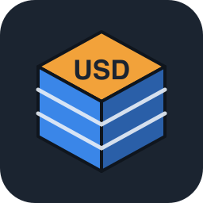

USD Viewer
USD Viewer: USDA, USDC, USDZ, a VS Code extension by Zovo
Open Pixar USD files in VS Code. Click a .usdc, .usdz or .usd file and see its prim tree, the attributes of each prim and a 3D view of the meshes, with binary USDC layers shown as readable USDA text. Works offline, with no account and nothing to install. Made by Zovo.
Free, MIT license. Needs VS Code 1.75.0 or newer. Extension ID zovo.zovo-usd-viewer, version 0.1.0.

Free, with no time limit:
- A prim tree with types, references, variants and inactive prims marked, and a filter box.
- The details of the picked prim: metadata, attributes with their values, relationships, references, payloads and variant sets.
- USDC binary shown as USDA text in a read-only tab, in the same layout the USD command line tools write.
- A 3D view of meshes, the simple shapes and point instancers: orbit, pan, zoom, wireframe, and the picked prim in blue.
- Sublayers, references, payloads, inherits and the selected variants are followed, on disk and inside USDZ packages. A USDZ package also lists the files inside it, with size and alignment.
- Syntax colors for
.usdafiles.
Zovo Pro: USD 19 once, for the Pro tools in every Zovo extension (team of 5: USD 59). Each Pro tool has 3 free tries on your computer first:
- Convert and export: USDC and USDZ to USDA text, USDA to USDC binary, the composed stage as one flat USDA file, meshes as OBJ or glTF binary (GLB).
- Stage check: missing layers, references and textures, broken meshes, missing defaultPrim, upAxis and units, USDZ packaging problems, saved as Markdown or JSON.
- Compare two USD files: two files as prim trees, with prims added and removed and every changed value.
Questions people ask
Is USD Viewer free?
Yes. USD Viewer is free and MIT licensed.
How do I install USD Viewer?
Click "Install in VS Code" above, or search for zovo.zovo-usd-viewer in the Extensions view.
How to use it
.usdc,.usdzand.usdfiles open in the viewer when you click them..usdafiles open as text, with syntax colors. Click the preview button in the editor title, or run USD Viewer: Open in USD Viewer, to see the same file in the viewer.- In the 3D view: drag to orbit, right-drag or Shift+drag to pan, use the wheel to zoom, double-click or press F to fit. W shows polygon edges, S hides the shaded surfaces.
- Click a prim in the tree to highlight it and list its attributes. Double-click a prim to frame it.
- USDA text in the toolbar opens the layer as text. In a USDZ package, Files lists what is inside, and each USD layer in it has its own text view.
- The Pro tools are in the Command Palette (USD Viewer: ... (Pro)), in the Explorer right-click menu and in the small row under the viewer toolbar. The row closes with its x for the rest of the session, and the setting
usdViewer.showProToolshides it for good. - Run USD Viewer: Open the Sample Scene (USDA) from the Command Palette to try it on a small scene.
What it reads
| Format | Read | Notes |
|---|---|---|
| USDA text | yes | #usda 1.0 layers, all value types, list ops, variant sets, time samples |
| USDC binary | yes | crate 0.8.0, the version current USD tools write, is tested; other 0.x versions use the same reader |
| USDZ | yes | the root layer and every layer inside; stored entries, deflated ones too |
.usd | yes | text or binary, the file header decides |
The 3D view shows the stage at its start time code. It draws each face with the color of its displayColor or of the diffuse color of its bound UsdPreviewSurface material. Textures are not drawn; textured surfaces show in light gray.
Settings
| Setting | Default | What it does |
|---|---|---|
usdViewer.maxFileSizeMB | 512 | Larger files open with a message instead of the stage |
usdViewer.followReferences | true | Open the sublayers, references and payloads a file names |
usdViewer.maxTriangles | 3,000,000 | Most triangles the 3D view draws |
usdViewer.textMaxArray | 20,000 | Arrays longer than this are shortened in the text view (the converter writes all values) |
usdViewer.showProTools | true | Show the Zovo Pro tools in menus and the toolbar |
usdViewer.showSupportLinks | true | Show the small links at the bottom of the viewer |
usdViewer.askForRating | true | Ask once for a rating, after two good opens at least 30 minutes apart |
Privacy
No network calls, no telemetry. The viewer reads the file you open and the files it references, from disk or from inside the USDZ package. Nothing is uploaded. The viewer page has a content security policy that blocks every remote load.
Known limits
- Composition covers sublayers, references, payloads, inherits, specializes and variant selections. Layer offsets, relocates, value clips and list edits across layers are not applied.
- Layers in other file formats (
.mtlx,.abc,.objthrough USD plug-ins) are listed as not opened. - Curves, points, NURBS and volumes are listed in the tree but not drawn. Skinned meshes show their rest pose.
- Paths that need a custom asset resolver (URLs,
omniverse://) are not opened.
Made by Zovo. Free and paid Zovo extensions: marketplace.visualstudio.com/publishers/zovo.
Guides
Install USD Viewer
Click the button to open VS Code and install it, or press Ctrl+P (Cmd+P on macOS) in VS Code and run ext install zovo.zovo-usd-viewer.
Free, MIT license. Needs VS Code 1.75.0 or newer. Extension ID zovo.zovo-usd-viewer, version 0.1.0.
Source code and issues are on GitHub.
Zovo Pro and support
Zovo Pro: USD 19 once, every Zovo viewer. It turns on the Pro tools in this extension and in the other Zovo extensions you use. The free features stay free.
After a card payment your license key shows on the next page. Paste it with the command "Zovo Pro: Enter a key".
You can also support the work with no Pro:
Need your format supported?
Open a format request with a sample file, and I reply there whether it can be done. For USD 299 once, through this GitHub Sponsors tier, I add your file format or a missing feature to this extension, with tests, within 7 days.